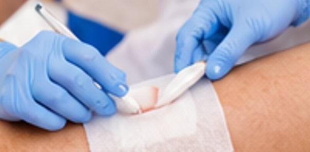
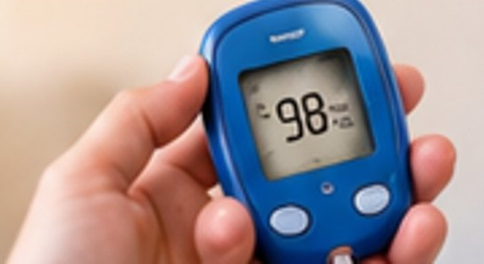

Acolhimento e escuta ativa
Conversa inicial sem pressa para compreender a rotina, o histórico, as necessidades e todas as dúvidas do paciente e de seus familiares.
Atendimento empático e respeitoso
Conheça nossa equipe de enfermagem domiciliar. Um atendimento acolhedor começa com escuta ativa, respeito e atenção individualizada às necessidades de cada paciente, trazendo segurança clínica e tranquilidade para toda a família sem sair de casa.
Enfermeiro e Técnica de Enfermagem atuando juntos.
Menos estresse de locomoção e ambiente familiar seguro.
Olhar atento ao paciente e orientação clara à família.
Cada situação familiar é única. Entre em contato para informar o que você precisa; nossa equipe orientará com clareza sobre os cuidados compatíveis com sua necessidade e área de atuação.
Conversa inicial sem pressa para compreender a rotina, o histórico, as necessidades e todas as dúvidas do paciente e de seus familiares.
Consulte a equipe sobre disponibilidade, localização e condições para o atendimento em casa, evitando deslocamentos desgastantes para o paciente.
Informações claras e orientações práticas dentro das atribuições legais de enfermagem, apoiando a família na continuidade segura do cuidado.
Profissionais identificados, qualificados e comprometidos com a ética em saúde, unindo visão clínica de enfermagem e dedicação no cuidado diário.
Dedicada ao cuidado próximo, humanizado e atento aos detalhes do dia a dia do paciente. Atua na realização de procedimentos técnicos, controle de sinais vitais, apoio nos cuidados diários e acolhimento tranquilo à família.
Responsável pela avaliação de enfermagem, planejamento individualizado da assistência, realização de curativos e procedimentos específicos, além de orientar pacientes e familiares com rigor técnico e clareza.
A atuação conjunta garante que cada procedimento respeite rigorosamente as atribuições legais da enfermagem, com olhar clínico apurado e presença acolhedora.
Veja exemplos de cuidados que podem ser avaliados conforme a necessidade clínica de cada paciente, sempre com técnica asséptica e orientação familiar.

Cuidado com LesõesAvaliação e cuidado de feridas operatórias, vasculares ou por pressão, com técnica adequada, higiene rigorosa e orientação para continuidade segura do cuidado.
Verificação cuidadosa da pressão arterial em repouso no ambiente doméstico, com registro organizado dos valores para acompanhamento clínico e médico.

Monitoramento CapilarRealização de teste de glicemia capilar (HGT), quando indicado, com técnica suave, anotação para controle glicêmico e orientação clara sobre o resultado.
Preparo e administração segura de medicações rigorosamente conforme prescrição médica vigente, avaliação prévia e atribuições legais de cada profissional.
Atenção individualizada para adultos, idosos ou pacientes em recuperação pós-operatória, com apoio nos cuidados diários, conforto e suporte à família.
Não encontrou exatamente o procedimento que procurava? Converse conosco para verificarmos a viabilidade técnica e legal de acordo com a prescrição do paciente.
Importante: As imagens são ilustrativas. A realização de cada procedimento depende de avaliação prévia, indicação ou prescrição médica quando necessária, habilitação e atribuições legais dos profissionais, além da disponibilidade do serviço. Consulte a equipe antes de agendar. Em situações de urgência ou emergência, procure imediatamente o pronto-atendimento ou acione o SAMU (192).
Organizamos um processo simples, transparente e acolhedor para que você e sua família tenham total segurança desde o primeiro contato.
Você nos envia uma mensagem contando brevemente a necessidade do paciente e o bairro ou região do atendimento.
Conferimos a indicação, eventual prescrição médica necessária, materiais e combinamos o melhor horário com a família.
Realizamos o atendimento em casa com pontualidade, higiene rigorosa, calma e respeito ao ritmo do paciente.
Anotamos os parâmetros avaliados e orientamos familiares ou cuidadores sobre os cuidados após a visita.
Respostas diretas para ajudar você a entender como funciona o atendimento domiciliar.
Basta entrar em contato pelo nosso WhatsApp (47) 9253-5087. Conte-nos qual cuidado você procura e a sua localização. Nossa equipe responderá para entender a situação e combinar o melhor horário disponível.
Sim. Para segurança do paciente e cumprimento ético e legal da enfermagem, a administração de medicamentos requer apresentação da prescrição médica legível e atualizada (com nome do paciente, medicação, dosagem, via, frequência e carimbo/assinatura do profissional prescritor).
Os atendimentos são realizados por Josilania Moreira (Técnica de Enfermagem) e Robson Campos (Enfermeiro), respeitando rigorosamente as competências técnicas e atribuições legais de cada categoria profissional conforme a necessidade do paciente.
Não. Nosso serviço é voltado para cuidados programados e procedimentos de enfermagem em domicílio mediante agendamento prévio. Em casos de sintomas agudos graves, falta de ar intensa, dor torácica ou emergências médicas, acione imediatamente o SAMU (192) ou dirija-se ao pronto-socorro mais próximo.
Envie uma mensagem pelo WhatsApp para solicitar informações sobre atendimento domiciliar. Teremos alegria em ouvir você e orientar o melhor cuidado para sua família.
Josilania Moreira (Técnica de Enfermagem) • Robson Campos (Enfermeiro)
Os procedimentos e cuidados oferecidos dependem de avaliação, habilitação profissional, indicação e condições de atendimento. Este site não substitui consulta médica ou serviço de urgência.